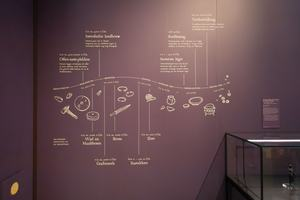
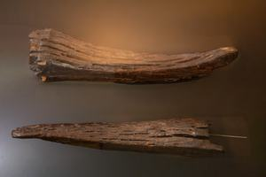
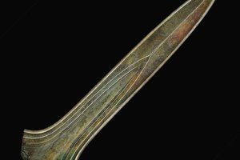
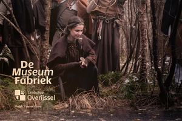

Opfergaben
In dieser Ausstellung zeigen wir verschiedene Fundstücke, die in den Moorgebieten in und um Twente entdeckt wurden. Vermutlich wurden diese damals wertvollen „Opfergaben“ den Göttern dargebracht, um sie gnädig zu stimmen und die Menschen vor Unheil zu bewahren.
Hörpunkte auf dieser Tour
-
 Weg zu den Opfergaben
Weg zu den Opfergaben -
 Karte der Opfergaben
Karte der Opfergaben -

1. Willkommen -
 2. Nachbau des Bargeroosterveld-Tempels, ca. 1500-1250 v. Chr.
2. Nachbau des Bargeroosterveld-Tempels, ca. 1500-1250 v. Chr. -

3. Holzteile für den kleinen Tempel -
 4. Feuerstein-Dolch aus Bruinehaar-Lokbelt (bei Haaksbergen), ca. 11.000–3.000 v. Chr.
4. Feuerstein-Dolch aus Bruinehaar-Lokbelt (bei Haaksbergen), ca. 11.000–3.000 v. Chr. -
 5. Drei große Feuersteinäxte aus Collendoorn bei Hardenberg (ca. 3450–2750 v. Chr.)
5. Drei große Feuersteinäxte aus Collendoorn bei Hardenberg (ca. 3450–2750 v. Chr.) -
 6. Vier goldene Halsringe aus Olst (spätrömische Zeit, ca. 400 n. Chr.)
6. Vier goldene Halsringe aus Olst (spätrömische Zeit, ca. 400 n. Chr.) -

7. Schwert von Ommerschans (mittlere Bronzezeit, ca. 1400 v. Chr.) -
 8 Bronzene Opfermesser aus Daarlerveen/Vroomshoop (ca. 1200–800 v. Chr.)
8 Bronzene Opfermesser aus Daarlerveen/Vroomshoop (ca. 1200–800 v. Chr.) -
 9. Münzfund von Hezingen (590–700 n. Chr.)
9. Münzfund von Hezingen (590–700 n. Chr.) -
 10. Das Ehepaar aus Weerdinge
10. Das Ehepaar aus Weerdinge -
 11. Das hölzerne Scheibrad aus Steenwijk, ca. 2280–2130 v. Chr.
11. Das hölzerne Scheibrad aus Steenwijk, ca. 2280–2130 v. Chr. -
 12. Ein Wollknäuel aus Roswinkel, ca. 800–600 v. Chr.
12. Ein Wollknäuel aus Roswinkel, ca. 800–600 v. Chr. -
 13. Mühlsteine aus Haaksbergen. ca. 100 n. Chr.
13. Mühlsteine aus Haaksbergen. ca. 100 n. Chr. -
 14. Hanze-Schale aus Kupfer mit einer Gravur der „Humilitas“ (ca. 1200 n. Chr.)
14. Hanze-Schale aus Kupfer mit einer Gravur der „Humilitas“ (ca. 1200 n. Chr.) -

15. Zum Schluss